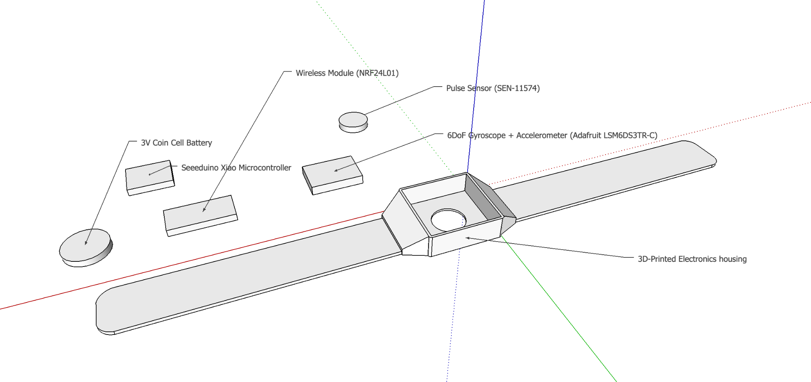
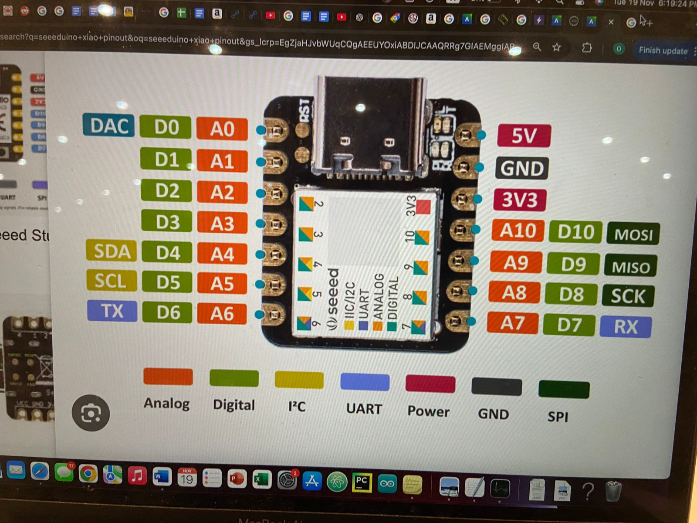
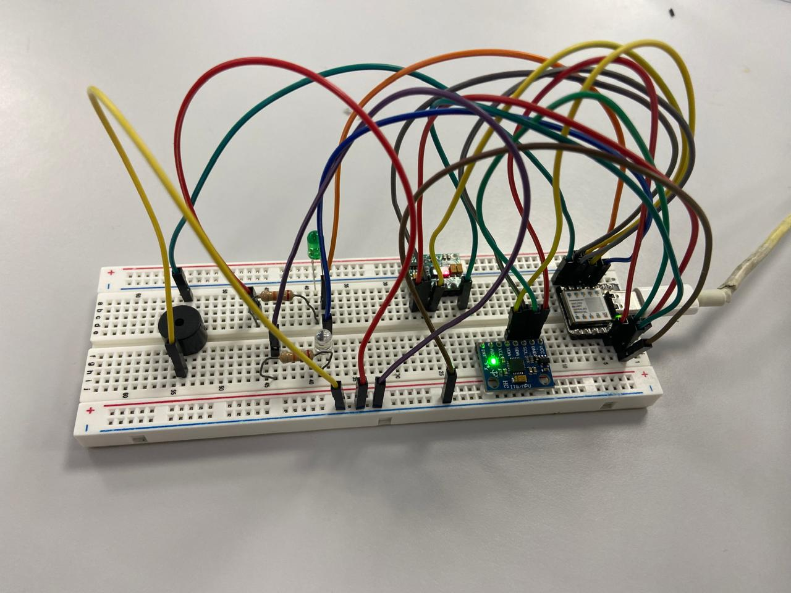
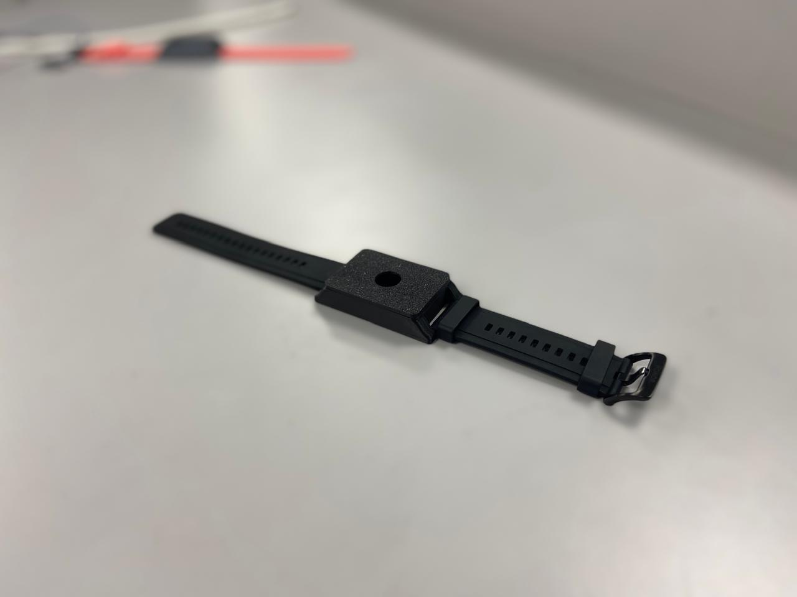
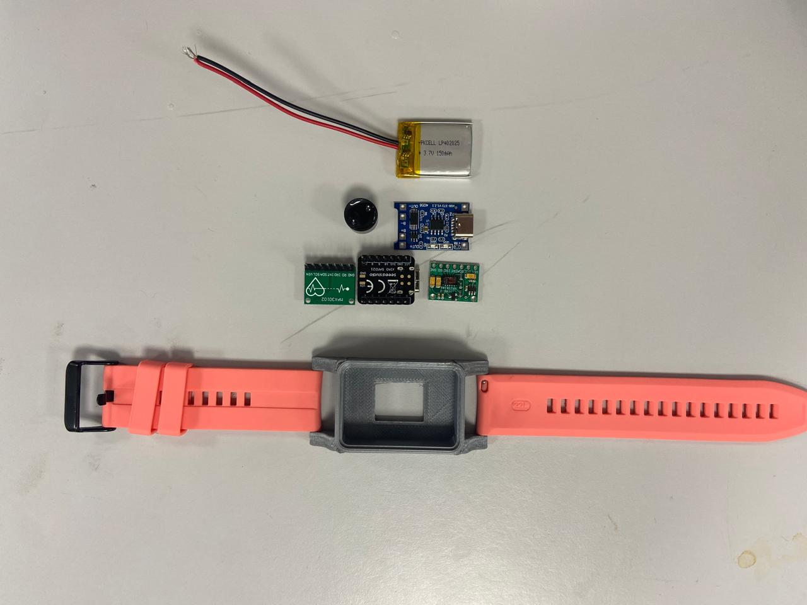

Drowning Detection Wristband
AI / embedded systems · My role: software and coding
- Context
- Team of four · software and coding
- Project status
- Wearable prototype; validation not reported
- Tools & methods
- Seeeduino XIAO · Motion and pulse sensors · NRF24L01

The concept
A wearable prototype project designed to combine motion and pulse sensing, recognize possible distress, and transmit an alert to a computer at the lifeguard station. The intended role is an added layer of protection alongside lifeguards.
Planned detection approach
The implementation plan proposes learning patterns of safe swimming from collected sensor data and identifying deviations, including erratic movement and changes from baseline heart rate. It does not report validated detection accuracy or completed water-safety testing.
Hardware & fabrication
- Planned components: Seeeduino XIAO, NRF24L01 radio, Adafruit LSM6DS3TR-C gyroscope/accelerometer, and SEN-11574 pulse sensor.
- The plan lists a 3 V coin cell; the supplied component photograph shows a rechargeable LiPo, documenting a different prototype configuration.
- PETG/TPU printed housing, electronics assembly, sensor integration, and iterative testing.
My contribution & team
The plan assigns Kareem Mahmoud software and coding, Afif Zughayer hardware, Omar Aloruk 3D printing and fabrication, and Rayyan Agha Alnimer data processing.
Implementation sequence
The 14-day plan covers enclosure printing, electronics and code integration, initial assembly, AI data collection, testing, revision, and final tests. These are planned stages, not a record of measured outcomes.



Resources
Original project documents.
